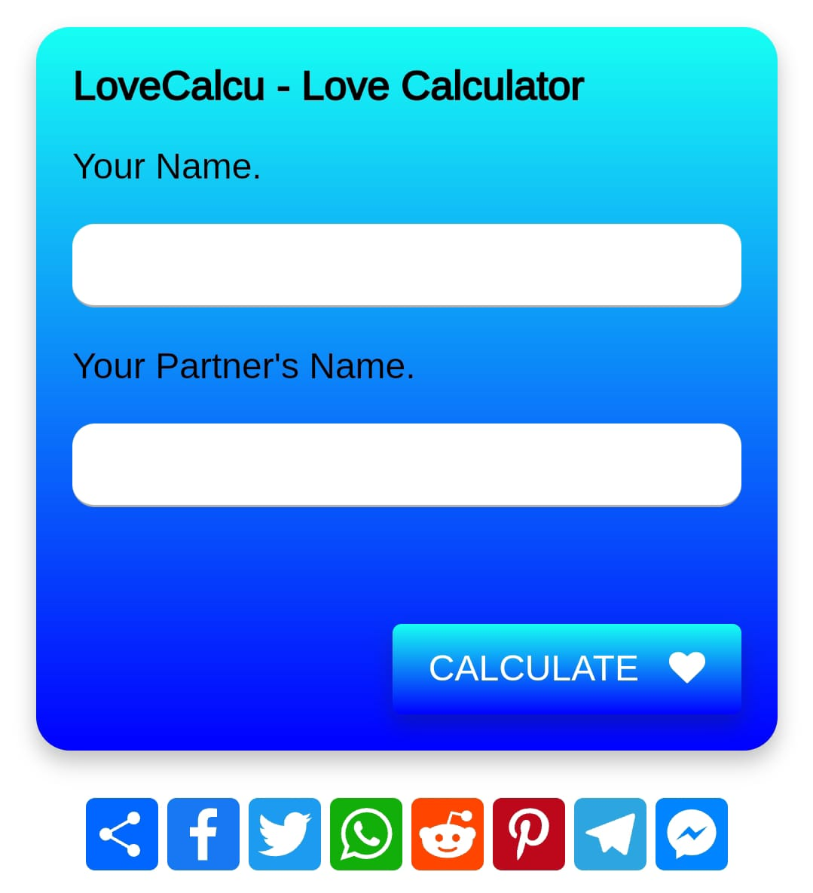

Your Name.
Your Partner's Name.
You must fill in both names first.
Don't like what you see? The future isn't set in stone, it is written in the stars! Just like the stars that drift through the night sky, you too can change the path of your future. If you believe hard enough, anything is possible. Check back later to see if you've improved your odds.
Lovecalcu is a single-page web application that allows you to calculate your love. The calculated result will be displayed on a scale of 0 to 100%. The higher the percentage, the greater your love will be. Many people use love calculator to figure out if they're compatible with their partners. These calculators help determine the level of harmony and compatibility in a relationship. Whether you're starting a new relationship or want to know more about your current partner, love calculator can provide useful insights. In this guide, we will explain what love calculator are, how they work, and how to use them effectively to find your ideal match. Get ready to discover the secrets of your love life!
love calculator use different information like names, birth dates, zodiac signs, and personal traits to figure out how compatible two people are. They use special formulas to analyze this information and give a score that shows how well-matched a couple might be. The score helps you understand if your relationship has a good chance of being strong and harmonious. Our love calculator use modern math formulas and ideas from things like astrology and psychology to come up with their results. They use statistical models and theories to give you a detailed evaluation. But remember, love calculator are just for fun and shouldn't be seen as absolute truth or scientific proof that two people are compatible.
Using love calculator is super simple! Just type your name and your partner's name in the name filed provided pabove. After entering both names, click on the calculate button. The love calculator will then use a special algorithm to figure out your love compatibility. It's as easy as that!
To get the best results from the love calculator, it's important to give accurate information. Make sure you enter the correct names and birth dates of both partners. Even small mistakes can affect the compatibility score that the love calculator gives you. So, double-check and provide the right details for the most accurate results. Love calculator are enjoyable and interesting, but it is important to keep things in perspective. They should not be the only thing you rely on when making decisions about your relationship. Instead, think of them as a fun way to start conversations and think about your compatibility. Remember, the most important thing is to have open and honest communication with your partner. That's what truly helps you understand and nurture your relationship.
When you use the love calculator, it gives you a result shown as a percentage or a score. A higher percentage or score means there's a better chance of compatibility. On the other hand, a lower percentage or score might mean there could be some differences or areas of potential conflict. It's important to keep an open mind when you see these results and remember that compatibility is not just based on one thing. There are many factors to consider in a relationship. Rather than just focusing on the score given by the love calculator, take the time to explore the analysis it provides. Some calculators might give you more information about the strengths and weaknesses of your relationship. This can help you understand where you might need to work harder or what aspects contribute to your compatibility. So, don't just stop at the score, but dig deeper into the details to gain more insight.
love calculator are fun to use and make you think, but they have their limits. They can not capture all the complexities of human emotions, personal growth, and how relationships change over time. It's important to keep in mind that real compatibility is about more than just a number. It's about understanding each other, growing together, and having a strong connection that goes beyond what a calculator can measure.
When using love calculator, it's important to have a balanced view. They can help you think about your relationship and start conversations, but it's also important to trust your own feelings and instincts. Your own experiences, values, and goals together are what really matter for the success of your relationship. So, while love calculator can be interesting, remember to rely on your own emotions and experiences too.
Think of love calculator as helpful tools to start conversations and learn more about your relationship. They can help you explore different aspects of your connection. Use them as a way to better understand each other and find areas where you can grow together. They're like stepping stones to strengthen your bond and make your relationship even better.
Always keep in mind that love is a journey, and compatibility is something that changes and develops as time goes on. It takes effort, dedication, and a real connection. When you see the results of love calculator, view them as a chance to learn and grow together with your partner. Embrace the opportunity to explore and discover more about each other as you continue on your journey of love.
The compatibility score is an indicator of the level of compatibility between you and your partner. A score of 0% means that you are not compatible at all, while a score of 100% means that you are a perfect match. However, it's important to note that the compatibility score is not a guarantee of a successful relationship. There are many other factors that can affect the success of a relationship, such as communication, trust, and commitment.
love calculator can be interesting and fun to use as they give you some insights into your relationship's compatibility. However, it's important to approach them with a balanced view. Take the results as a starting point for meaningful conversations and self-reflection. Keep in mind that true love is based on trust, communication, and the experiences you share. Let the love calculator guide you, but always trust your own feelings and enjoy the adventure of love.
We hope you are using this love calculator website in your daily life to calculate your love between you and your lover or crush and also enjoying LoveCalcu as much as you can. if you are facing any difficulty or encountered any issue in accessing or using this site, feel free to contact us. We'll keep working on LoveCalcu to provide you the better user experience.
Last updated few mins ago